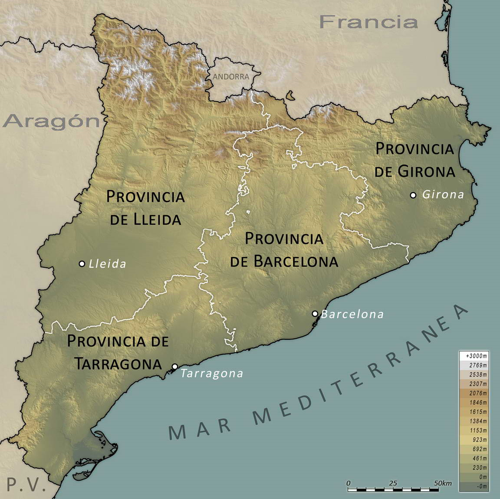

En tiempos del Imperio Romano, formaba parte principalmente de la Hispania Citerior, contando con 3 ciudades: Tarraco, ya entonces capital de provincia y uno de los principales focos del imperio, Barcino asentamiento militar y comercial y Gerunda: relegada a una función de pura y estricta romanización.
Con la entrada en el medievo o caida del Imperio Romano, Catalunya se re organizo durante el reinado visigodo, quedando totalmente integrada en la provincia Tarraconense y manteniendo su capital inicial.
Una vez establecido el dominio musulman, parte de Catalunya paso a formar parte del Al - Álandalus hasta el siglo nueve d.C. Ya en ese año, Carlomagno decidio restituir el Imperio Romano de Occidente, uniendose a la reconquista que empezo en la peninsula dos siglos antes.
Con la toma de Girona, Barcelona y Lleida, una parte considerable del territorio, se dividio en un conjunto de condados, gobernados por un representante designado por el rey franco, siendo el primero conocido como Narna, hasta que se establecio la Marca Hispánica a finales de siglo. Pasando Catalunya de ser unos nucleos poblados a una frontera militarizada.
Durante los siglos 8 y 9 d.C, la organización territorial se dividio en los ocho condados de: Barcelona (empezando a ocupar el puesto de capital,) Girona, Osona, Urgell, Besalú, Cerdanya, Rosello y Ampuries(que se mantenia existente desde siglos atras, cuando empezo como un nucleo comercial durante las primeras visitas de los griegos a la peninsula). Esta división, se mantendria hasta finales de siglo.
Para entender mejor la re organización que ocurriria, es importante resaltar, la situación social de la capital condal (Barcelona).
Para aquel entonces Barcelona ya contaba con una sociedad dinamica, la cual crecia en necesidades a la par de en población. Este hecho, desato los temores del gobernador de Lleida de una invasión. Lo que desato una guerra a mediados de siglo que daria lugar a la muerte del conde en el 890 d.C.
Ya establecida la casa de Barcelona y en su lecho de muerte, Guifre sello el inicio de la ruptura con el rey al ser el primero en designar un sucesor y re distribuir el territorio, quedando este dividido en tres conjuntos de condados.
Estando dos de ellos a la par en importancia y quedando Barcelona como el principal. Esta unión politica que surgio mediante acuerdo de gobernanza conjunta, duraria hasta una primera unificación en la que todos los condados reconocerian por encima de sus gobernantes locales al conde de Barcelona (aproximadamente mediados del siglo once).
A partir del 1311, Catalunya ya oficialmente pasando a ser re conocida como tal desde poco antes, se unio al reyno de Aragón hacia el 1137 d.C,. En aquel entonces, se adopto el sistema de veguerias, organización administrativa y militar que organizaria el territorio en base a las principales ciudades, siendo las principales veguerías: Barcelona, Gerona, Lleida, Tarragona, Tortosa y Vic.
Haz clic en las capitales de provincia para saber más sobre ellas.

La Seu Vella: Descripción: La Catedral de La Seu Vella es uno de los monumentos más emblemáticos de la ciudad. Situada en lo alto de una colina, ofrece vistas panorámicas de Lleida y sus alrededores. La iglesia, construida entre los siglos XIII y XVIII, combina elementos románicos y góticos y es una de las catedrales más importantes de Cataluña. Qué ver: Además de la iglesia, se pueden visitar el claustro y las murallas medievales. La torre de la catedral es uno de los puntos más visitados por su excelente vista. Ubicación: Plaza de la Catedral, Lleida.
Castillo de Gardeny: Descripción: Este castillo templario, situado en el monte Gardeny, tiene una gran importancia histórica, ya que fue sede de los templarios durante la Edad Media. Qué ver: El castillo tiene una estructura bien conservada y ofrece una visita que incluye su iglesia, las murallas y un centro de interpretación que explica la historia de los templarios en la ciudad. Ubicación: Barrio de Gardeny, Lleida.
Museo de Arte de Lleida (Museu d'Art de Lleida): Descripción: Alberga una impresionante colección de arte medieval y moderno. Destacan sus piezas de arte sacro, como las pinturas y esculturas medievales, así como su colección de arte contemporáneo. Qué ver: La colección permanente de arte románico, gótico y barroco es particularmente notable, así como exposiciones temporales de arte moderno. Ubicación: Calle del Canyeret, Lleida.
El Palacio de la Paeria: Descripción: Este edificio renacentista es la sede del Ayuntamiento de Lleida. Tiene una arquitectura destacada, y su fachada es uno de los ejemplos más representativos del renacimiento en la ciudad. Qué ver: Puedes visitar el interior para ver las decoraciones y detalles arquitectónicos, aunque la gran atracción es el patio central del palacio. Ubicación: Plaza de la Paeria, Lleida.
El Parque de los Campos Elíseos (Parc dels Camps Elisis): Descripción: Es uno de los principales pulmones verdes de la ciudad. Ideal para paseos tranquilos, picnics y actividades al aire libre. El parque tiene una gran variedad de especies de árboles, flores y áreas de juegos. Qué ver: El parque está muy bien cuidado y tiene varias esculturas, además de un pequeño lago. También alberga eventos y conciertos durante el año. Ubicación: Junto al centro de la ciudad.
El Parque Natural de la Sierra del Montsec: Descripción: Aunque no está en el centro de la ciudad, es una de las grandes atracciones naturales cercanas a Lleida. Este parque ofrece paisajes espectaculares y rutas para hacer senderismo, ciclismo y actividades de aventura. Qué ver: Las vistas panorámicas del Canyó de Mont-Rebei y el embalse de Canelles son imprescindibles. Ubicación: A unos 30-40 minutos en coche desde Lleida.
Los Jardines de los Panyos (Jardins de la Paeria): Descripción: Situados junto al Palacio de la Paeria, estos jardines son un lugar perfecto para pasear y relajarse en el centro de la ciudad. Están rodeados de arquitectura histórica y son un remanso de paz en el corazón de Lleida. Qué ver: El jardín tiene fuentes, estatuas y amplias zonas de césped, siendo una zona ideal para tomar un respiro durante la visita a la ciudad.
Actividades Turísticas en Lleida: Senderismo y ciclismo: Lleida está rodeada de paisajes naturales que ofrecen rutas tanto para principiantes como para expertos. Desde el Parque Natural de la Sierra del Montsec hasta las rutas por los alrededores del río Segre, hay muchas opciones para disfrutar de la naturaleza.
Enoturismo: La región de Lleida tiene una gran tradición vinícola, por lo que una visita a alguna de sus bodegas es una excelente forma de conocer la gastronomía local y los productos típicos. Las rutas del vino de la DO Costers del Segre permiten recorrer varias bodegas.
Fiestas y festivales: La Festa Major de Lleida (junio) es la celebración más destacada, con eventos populares, música en vivo, danzas y fuegos artificiales. También se celebra el Festival Internacional de Música de Lleida y el Festival de Cine de Lleida, que atraen a turistas interesados en el arte y la cultura.
Rutas gastronómicas: Lleida es conocida por su excelente gastronomía, basada en productos autóctonos como el aceite de oliva, la fruta (cerezas, melocotones) y el turrón. Es recomendable probar el caracol o la butifarra (embutido típico).
Esquí en los Pirineos: Aunque Lleida en sí misma no tiene estaciones de esquí, está cerca de las estaciones de esquí de los Pirineos, como Port Ainé o Espot, que ofrecen una gran variedad de deportes de invierno.
Consejos prácticos: Mejor época para visitar: La primavera y el otoño son las estaciones más agradables para disfrutar del clima suave y las actividades al aire libre. Los veranos pueden ser muy calurosos, especialmente en los meses de julio y agosto.
Cómo moverse: Lleida tiene un centro histórico compacto que se puede recorrer fácilmente a pie. Para explorar sus alrededores, como el Parque Natural del Montsec, lo ideal es alquilar un coche.
Tarragona, situada en la costa noreste de España, es una ciudad que combina a la perfección su rico legado histórico con la belleza del mar Mediterráneo. Fundada en el siglo III a.C., Tarragona fue una de las ciudades más importantes de la Hispania romana, conocida entonces como Tarraco. Hoy en día, sus vestigios arqueológicos, reconocidos como Patrimonio de la Humanidad por la UNESCO, ofrecen una ventana al pasado imperial de la ciudad.
Entre los principales atractivos turísticos de Tarragona se encuentran:
Anfiteatro romano: Construido en el siglo II d.C., este anfiteatro albergaba espectáculos como luchas de gladiadores y hoy en día se pueden apreciar sus restos junto al mar.
Circo romano: Destinado a carreras de carros, es uno de los circos mejor conservados de Occidente y se encuentra integrado en la trama urbana de la ciudad.
Catedral de Tarragona: Este majestuoso templo combina estilos románico y gótico y se erige en el punto más alto de la ciudad, ofreciendo vistas panorámicas impresionantes.
Casco antiguo: Conocido como la "Parte Alta", este barrio medieval está lleno de calles estrechas, plazas encantadoras y una vibrante vida local.
Playas: Tarragona cuenta con playas de arena dorada y aguas cristalinas, como la Playa del Milagro, ideales para relajarse y disfrutar del sol mediterráneo
La gastronomía tarraconense es otro de sus grandes atractivos, destacando platos de mariscos frescos y la tradicional caldereta de romesco. Además, la ciudad celebra numerosas festividades a lo largo del año, siendo la más emblemática la Fiesta de Santa Tecla en septiembre, donde se pueden presenciar los famosos "castells" o torres humanas.
InicioBarcelona es una ciudad vibrante y llena de historia, famosa por su arquitectura modernista, playas y una escena cultural dinámica. A continuación, se destacan algunos de los principales atractivos y actividades que no debes perderte durante tu visita:
Principales atracciones turísticas:
La Sagrada Familia: Esta emblemática basílica diseñada por Antoni Gaudí es Patrimonio de la Humanidad por la UNESCO y una visita obligada para quienes desean apreciar su arquitectura única.
Parque Güell: Otro de los magníficos diseños de Gaudí, este parque ofrece vistas panorámicas de la ciudad y coloridos mosaicos que reflejan la creatividad del arquitecto.
Las Ramblas: Este animado paseo peatonal está lleno de kioscos, cafeterías y artistas callejeros, que conducen desde la Plaza de Cataluña hasta el puerto antiguo.
Barrio Gótico: Pasea por las estrechas calles adoquinadas de este histórico barrio, donde encontrarás la Catedral de Barcelona y plazas encantadoras.
Museo Picasso: Hogar de una extensa colección de obras del famoso pintor, este museo ofrece una visión profunda de su evolución artística.
Información práctica:
Oficinas de turismo: Para obtener mapas, consejos y más información, puedes visitar las oficinas de turismo ubicadas en puntos clave de la ciudad.
Transporte: Barcelona cuenta con un eficiente sistema de transporte público que incluye metro, autobuses y tranvías, facilitando el desplazamiento por la ciudad
Gastronomía: No olvides degustar la deliciosa cocina catalana en los numerosos restaurantes y mercados locales, como el famoso Mercado de La Boquería.
InicioGirona, situada en el noreste de Cataluña, es una ciudad que combina historia, cultura y belleza natural. A continuación, se destacan algunos de sus principales atractivos turísticos:
Casco Antiguo y Barri Vell
El casco antiguo de Girona, conocido como Barri Vell, es uno de los centros históricos mejor conservados de Cataluña. Sus estrechas calles empedradas, plazas pintorescas y edificios históricos reflejan la rica herencia de la ciudad. Destaca el Call, el antiguo barrio judío, considerado uno de los mejor preservados de Europa, con callejones estrechos y patios ocultos que invitan a perderse en el tiempo.
Catedral de Girona
La Catedral de Santa María, con su impresionante nave gótica, es un emblema de la ciudad. Su escalinata y fachada ofrecen una vista majestuosa, y su interior alberga tesoros artísticos de gran valor.
Baños Árabes
Los Baños Árabes de Girona son una muestra de la influencia musulmana en la región. Este edificio histórico, que data del siglo XII, ofrece una visión fascinante de la arquitectura y las costumbres de la época.
Murallas de Girona
Las antiguas murallas que rodean la ciudad ofrecen la oportunidad de dar un paseo panorámico con vistas espectaculares de Girona y sus alrededores. Recorrerlas es una forma excelente de apreciar la magnitud histórica y estratégica de la ciudad.
Gastronomía
La oferta gastronómica de Girona es amplia y variada, con restaurantes que van desde la cocina tradicional catalana hasta propuestas más innovadoras. La ciudad ha ganado reconocimiento internacional en el ámbito culinario, ofreciendo experiencias que satisfacen todos los paladares.
Entorno Natural
La ubicación de Girona, entre el mar y la montaña, la convierte en un punto de partida ideal para explorar la Costa Brava, conocida por sus playas de aguas cristalinas, y los Pirineos, que ofrecen rutas de senderismo y paisajes naturales impresionantes.
Para obtener información más detallada sobre alojamientos, restaurantes y eventos culturales, se recomienda visitar la web oficial de la Oficina de Turismo de Girona.
Girona es una ciudad que ofrece una experiencia completa, combinando su rico patrimonio histórico con una vibrante vida cultural y un entorno natural privilegiado.
Inicio